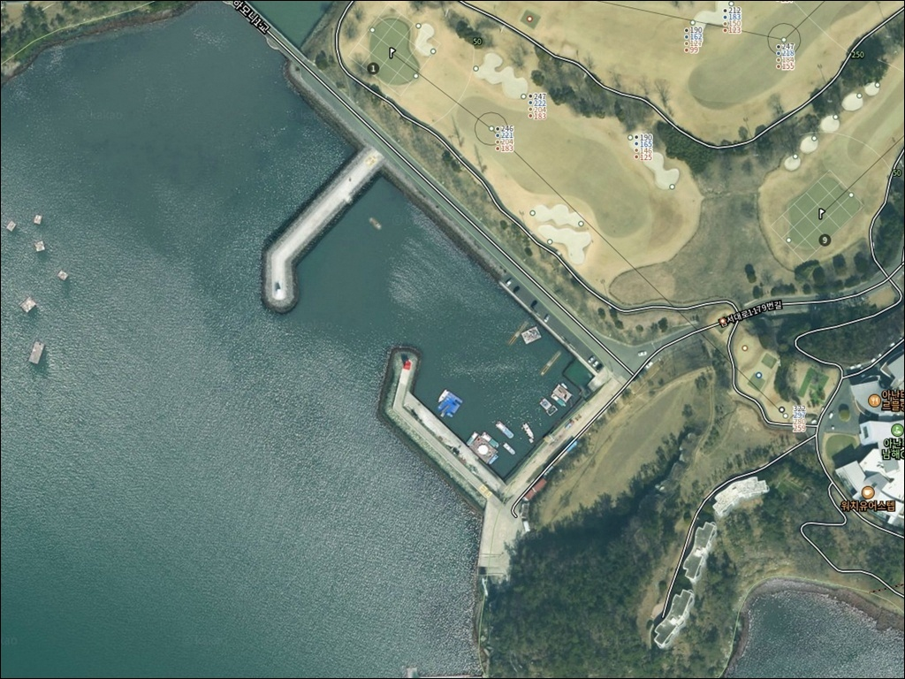
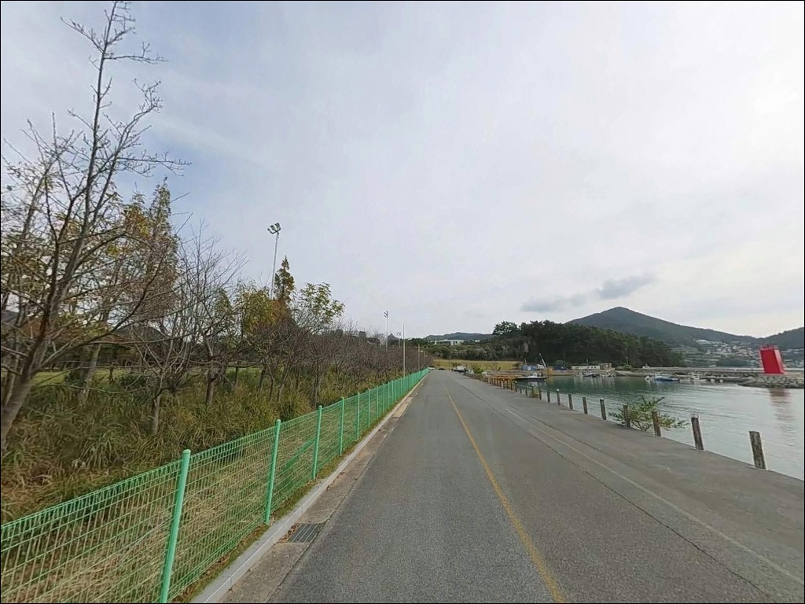
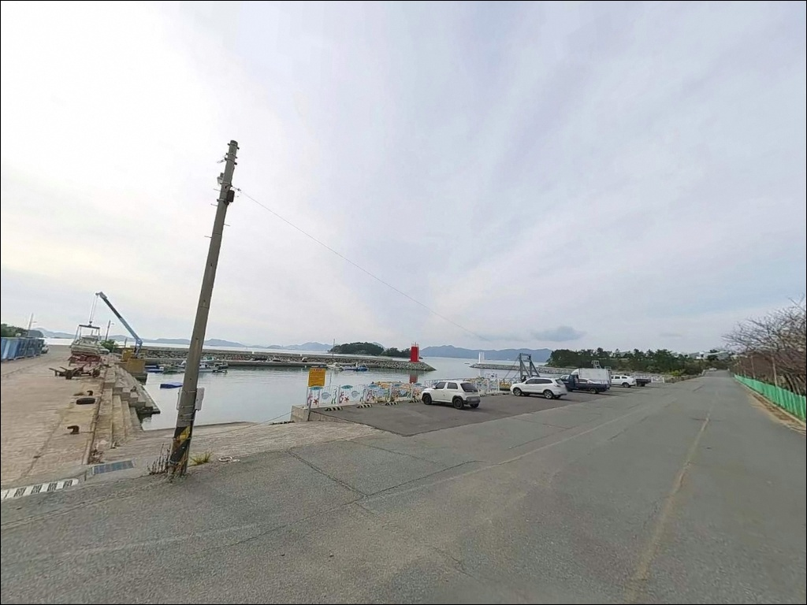
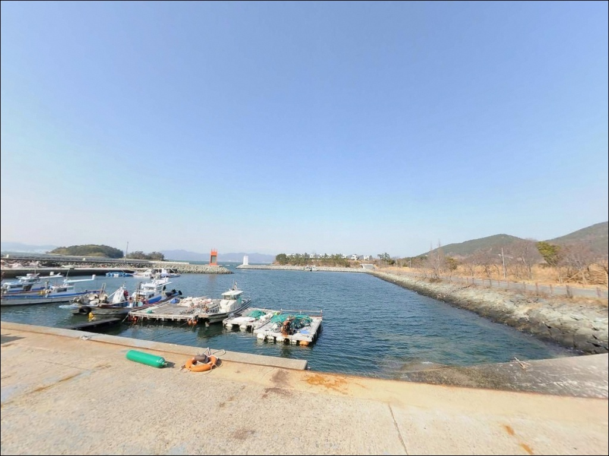
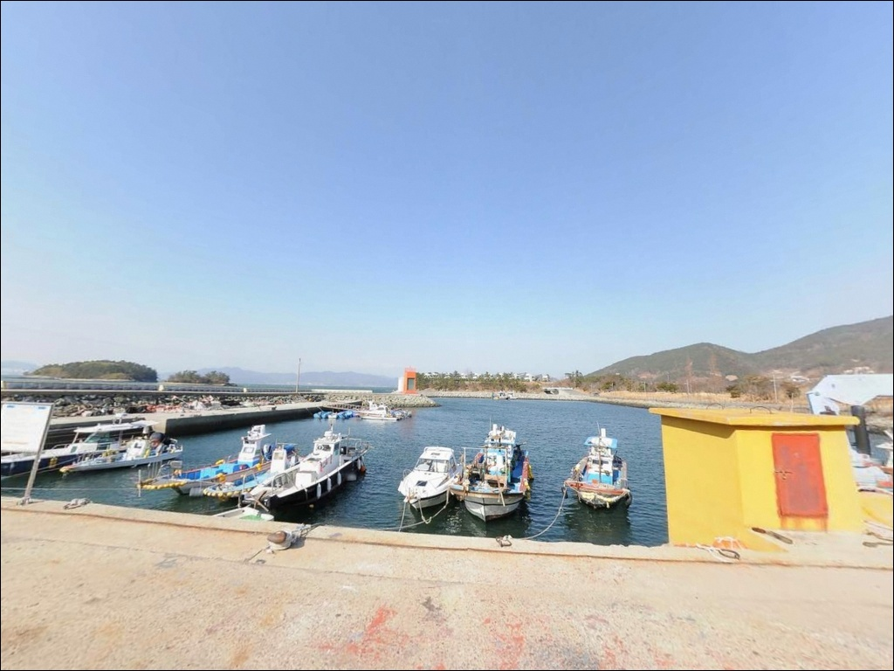
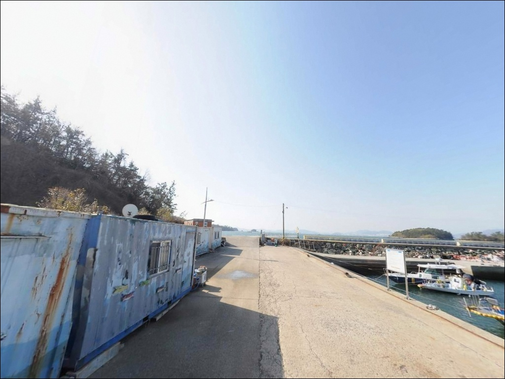
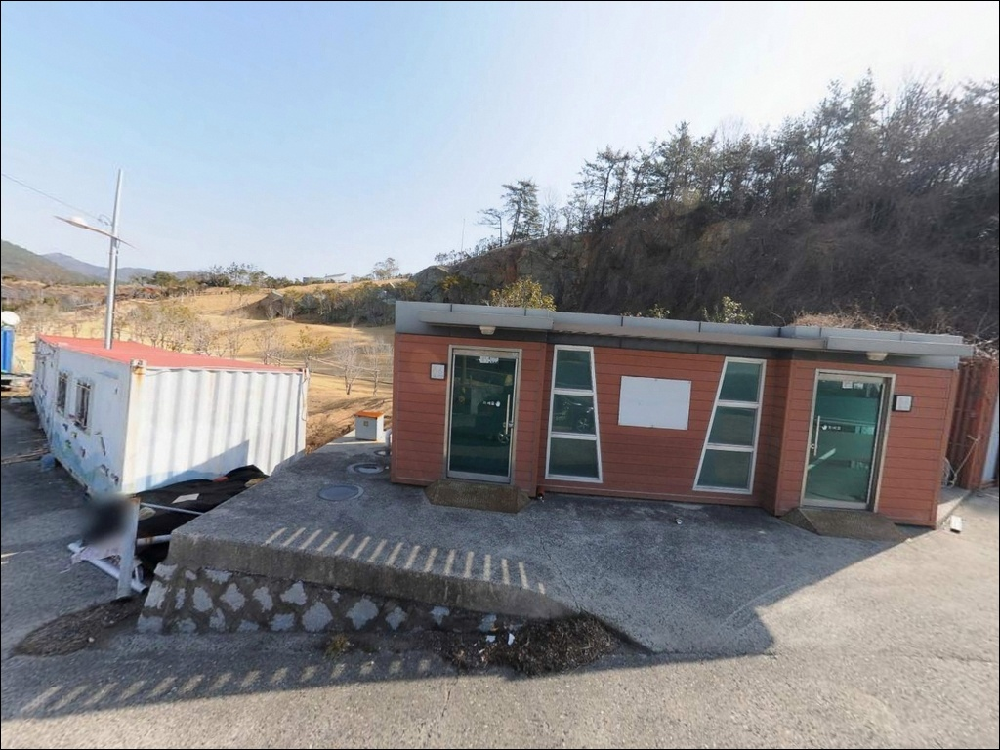
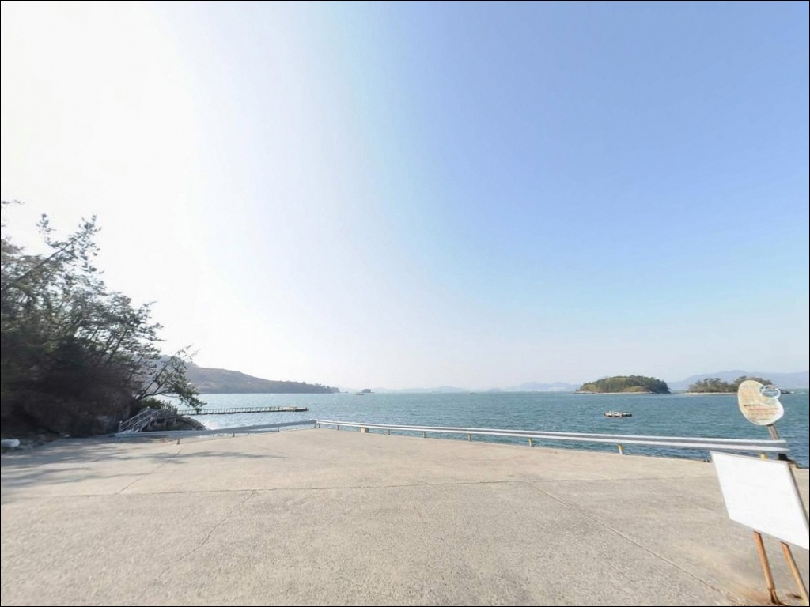
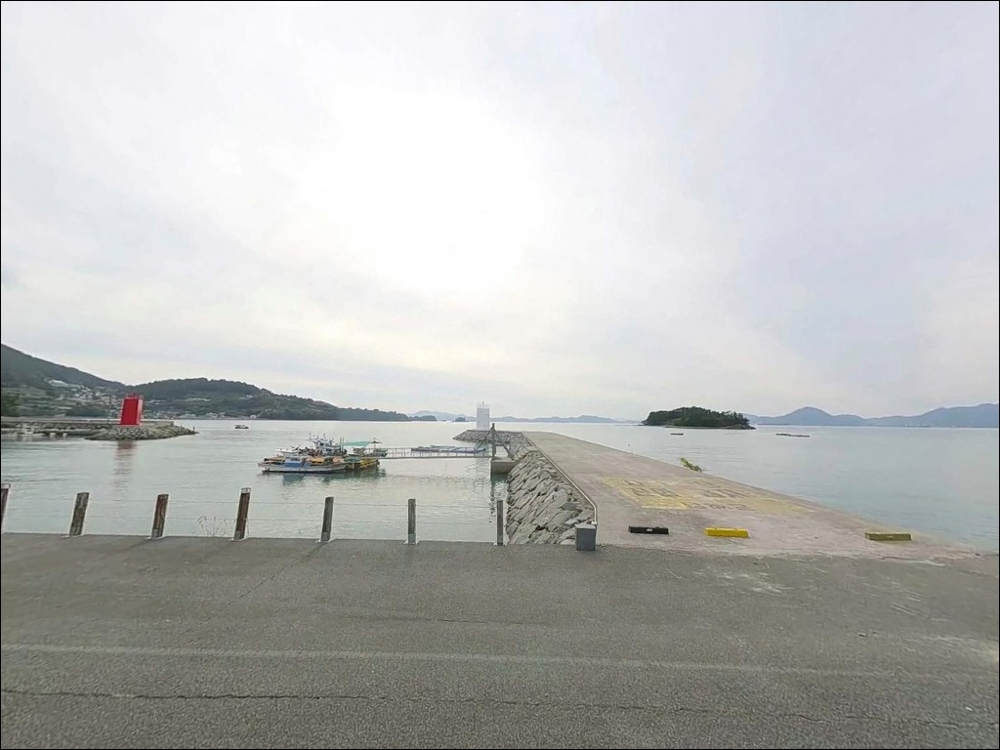

이 페이지에는 광고(제휴 링크 포함)가 있으며, 광고 링크를 통해 구매하면 운영자가 판매 수익 또는 수수료를 받을 수 있습니다. 포인트 사진: 카카오맵 스카이뷰·로드뷰. 이 페이지의 지도·사진 이미지는 카카오맵의 실제 서비스 이미지와 다를 수 있습니다.


사리 물때엔 채비 흐르던 덕월리방파제, 조금 물때에 살아난 감성돔 찌낚시
포인트 안내
덕월리방파제
경남 남해군 남면 덕월리 308-1
방파제 외항 끝단에 자리를 잡아도
사리 전후 조류가 빠를 때는
채비가 바닥을 잡지 못하고
흘러버리는 상황이 반복됩니다.
물때를 맞추지 않으면
아무리 좋은 자리도 빈 채비로 끝나는
포인트입니다.
덕월리방파제는 남해 남면 구미마을 앞에
자리한 정주어항 방파제입니다.
빨간 등대와 흰 등대가 마주 보는
양방향 돌출형 구조로,
외항은 목도·마도 방향으로 열려 있고
내항은 소형 어선이 정박하는 구간입니다.
외항 끝단이 주요 낚시 자리로,
조류 흐름을 활용하는 방식이 기본입니다.
이 글은 덕월리방파제의
진입 환경, 낚시 지형 여건,
차박 조건에 집중합니다.
특정 어종 보장이나 조황 단정은
이 글의 범위에 포함되지 않습니다.

1. 진입 동선과 포인트 접근성
남해 남면을 관통하는 남서대로(지방도 1024호선)에서
덕월리 방향 마을 진입로로 진입합니다.
구미숲 이정표가 있어 초행길에도
큰 어려움 없이 찾을 수 있는 구조입니다.
진입로는 아난티남해 골프장과 스파리조트
인근 도로망을 통해 직접 연결되며,
포장 상태가 양호해 승용차와 캠핑카 모두
진입에 무리가 없습니다.
마을 안길은 1차선 포장도로이므로
일반 승용차·소형 SUV 기준 진입이 기본입니다.
대형 캠핑카나 트레일러를 견인하는 경우라면
마을 진입 전에 위성지도로 회차 구간을
미리 확인하고 들어가는 편이 안전합니다.
방파제 근처 포구 공간에서 회차가 가능하나
대형 차량은 회차 여건을 사전에 파악해야 합니다.
주차는 방파제 시작점 좌측 공터가
차량 5~7대 수용 가능한 규모로
가장 여유로운 선택지입니다.
내항 선착장 주변 노면도 활용 가능하나
어민 작업 동선을 막지 않는 자리가 먼저입니다.

2. 차박 환경과 야간 체류 여건
덕월리방파제는 아난티남해 리조트와
인접한 위치에 있어
완전한 오지형 차박지와는 성격이 다릅니다.
방파제 입구 공터는 바다를 조망하며
스텔스 차박이 가능한 공간으로,
마을과 적당히 격리된 구조라
야간 프라이버시는 양호한 편입니다.
야간 가로등이 기본으로 갖춰져 있어
완전 암흑 환경은 아닙니다.
낚시 후 조명 없이도 기본 활동이 가능한 수준이지만,
방파제 끝단이나 테트라포트 위는
야간에 별도 헤드랜턴을 챙기는 것이 기본입니다.
내만 구조 덕분에 파도 소음보다는 잔잔한
수면 분위기가 유지됩니다.
주변 리조트와 마을 주민을 고려해
야간 취사 소음과 흔적 최소화는
이 포인트에서 지켜야 할 기본 매너입니다.
낚시를 마치고 조용히 하룻밤 머무는 용도라면
접근성과 안정성 측면에서
무난하게 활용할 수 있는 차박지입니다.


3. 주변 편의시설 및 인프라 현황
덕월항 선착장 인근에
지자체 관리 공중화장실이 있습니다.
방파제를 찾는 낚시인이 활용할 수 있는
시설로 확인됩니다.
마을 내 소규모 슈퍼가 있으나,
낚시 소품과 식재료는 차량으로 10분 거리인
남면 소재지에서 마트와 식당 이용이
가능합니다.
아난티남해 골프장 인접으로 인해
주변 도로 정비 상태가 우수한 편입니다.
반경 3km 내에 사촌해수욕장,
구미항 등 남면 주요 포인트가 밀집해 있어
이동 동선을 확보하기에 어렵지 않은 위치입니다.
응급 상황 발생 시 남해군청 방면
대형 병원까지 차량 20분 수준을
출발 전에 확인해 두는 것이 기본 준비입니다.

4. 진입 전 반드시 챙겨야 할 준비사항
덕월리방파제 방문 전에
가장 먼저 확인할 것은 물때입니다.
이 포인트는 내만형 구조지만
목도·마도 사이 수로에서 조류가 통과하며
방파제 끝단 조류 흐름이 만들어집니다.
사리 전후보다 조금 물때에
채비 컨트롤이 수월하고
낚시 여건이 안정되는 구조입니다.
바다타임에서 남해 남면 기준 물때를 확인하고
출발 시각을 맞추는 것이 기본 전략입니다.
남해안 특성상 안개와 돌풍이 잦습니다.
기상청 해양 날씨 예보를 당일 아침
다시 한번 확인하는 것이
헛걸음을 막는 조건입니다.
외항 테트라포트 위는 이끼와 해초로
미끄럼 사고 위험이 높으므로
논슬립 신발과 구명조끼는 필수입니다.
암초성 바닥이 발달한 지형이라
채비 손실이 예상되니
여분 채비를 넉넉하게 준비합니다.
덕월항은 어민들의 작업 공간이기도 합니다.
어구와 그물이 놓인 구간에는
주차나 텐트 설치를 하지 않아야 하며,
낚시 후 발생한 쓰레기와 밑밥 잔여물은
반드시 수거해 돌아오는 것이 기본 매너입니다.
한려해상국립공원 인접 해역이므로
방문 전 낚시 관련 규정 확인도
빠뜨리지 않는 것이 좋습니다.

5. 지형 기반 낚시 여건 분석
덕월리방파제의 핵심은
외항 끝단에서 목도·마도 방향으로 형성되는
조류 흐름입니다.
방파제 외측은 테트라포트로 보강되어 있고,
내측은 석축 형태입니다.
주변에 여(암반)가 발달해 있어
어류 은신처와 먹이 활동 구간이
자연스럽게 갖춰진 지형입니다.
수심은 방파제 중간부 5~6m,
끝단 기준 7~10m 내외로 안정적입니다.
바닥은 암반과 일부 사질이 혼합된 구조로,
밑걸림이 있는 구간과 원투 가능한 사질대가
섞여 있는 편입니다.
외항 끝단 조류가 꺾이는 지점은
감성돔 찌낚시에 가장 잘 맞는 자리입니다.
내만 구조라 외해 파도 직격은 없지만,
목도·마도 수로에서 들어오는 조류는
물때에 따라 강도가 달라집니다.
정조 타이밍을 계산하고 입장하는 것이
이 포인트를 효율적으로 공략하는 방법입니다.
최신 조황은 출조 전 남해 남면 방파제 조황으로
검색해 보시기 바랍니다.


6. 낚시 스타일별 공략 조건이 달라지는 이유
이 포인트에서 가장 잘 맞는 낚시는
감성돔 릴찌낚시입니다.
외항 끝단 수심 7~10m 구간과
조류가 꺾이는 지점은
찌채비를 흘리는 방식에 유리한 조건을
갖추고 있습니다.
가을부터 초겨울까지 감성돔 조과가 뚜렷한
시즌이 형성되는 해역입니다.
루어 라이트게임도 이 포인트 구조에 잘 맞습니다.
방파제 석축 주변과 암초 경계선을
소형 지그헤드나 웜으로 탐색하면
볼락과 우럭을 기대할 수 있는 지형입니다.
10월 말 이후 겨울철에 씨알이 올라오는
경향이 있어, 야간 라이트게임 타이밍으로
활용하기에 어울리는 스타일입니다.
에깅은 목도·마도 사이 수로 방향으로
에기를 원투하는 방식이 기본입니다.
9월부터 시즌이 형성되는 갑오징어와
무늬오징어를 대상으로
이 일대 남면 해역에서 에깅을 즐기는
낚시인들이 꾸준히 찾는 포인트입니다.
가을철에는 갑오징어와 문어 에깅으로
이 해역의 활용폭이 넓어집니다.
원투낚시는 외항 사질대를 노리는 방식으로 운용합니다.
조류가 빠를 때는 무거운 봉돌이 필수이며,
정조 타이밍에 채비를 멀리 보내
바닥 어종을 탐색하는 방식이 유효합니다.
도다리, 노래미 계열을 기대할 수 있는
지형 조건입니다.

7. 대안 포인트와 플랜 B 동선
덕월리방파제 조류가 너무 강하거나
주차 여건이 여의치 않을 때
첫 번째 대안은 구미동방파제입니다.
덕월리방파제에서 북쪽으로 약 800m 거리로,
석축 방파제 160m 규모에 가로등이 설치되어 있어
야간 낚시 여건도 안정적인 편입니다.
동일 해역 조류 패턴을 공유하므로
이동 부담이 적은 가장 현실적인 대안입니다.
남쪽으로 약 1km 거리의 평산방파제도
같은 남면 해역 패턴을 가진 대안 포인트입니다.
덕월리에서 조건이 맞지 않을 때
구미동과 평산을 묶어서 탐색하는 동선이
이 권역에서 가장 효율적인 이동 경로입니다.
조일낚시(남해군 남면 선구리)에서
현지 정보를 확인하고 출발하면
이동 판단에 도움이 됩니다.
차박 대체 후보로는
덕월리에서 약 2~3km 거리의
사촌해수욕장 주변이 있습니다.
편의시설이 더 갖춰진 공간으로,
덕월리 주차 여건이 부족할 때
기점을 옮기는 선택지가 됩니다.
단, 지정 외 야영 제한 여부를
방문 전 현황 확인이 먼저입니다.

조건을 알고 들어가면
덕월리방파제는 다른 포인트가 됩니다
릴찌낚시로 감성돔을 노리거나
에깅과 루어 라이트게임을 함께 운용하는
낚시인이라면 덕월리방파제의 지형 구조는
잘 맞는 조건을 갖추고 있습니다.
외항 끝단 수심 7~10m와 암초성 바닥,
목도·마도 수로의 조류 흐름이
복합 낚시 스타일을 허용하는 포인트입니다.
반면 물때 계산 없이 사리 전후에 진입하거나,
대형 차량으로 마을 안길 회차 여건을
확인하지 않고 들어오면
낚시보다 이동에 시간을 더 쓰는 상황이
생기기 쉬운 구조입니다.
물때, 진입로, 채비 여분,
이 세 가지를 갖추고 가면
남해 남면 해역에서 기억에 남을
출조가 될 수 있는 방파제입니다.
조용한 어촌 포구 분위기에서
낚시를 마치고 가로등 아래 하룻밤 머무는
차박 여행자라면,
구미마을 앞 잔잔한 수면과 함께하는
낚시와 차박이 자연스럽게 어우러지는
출조가 될 수 있는 곳입니다.